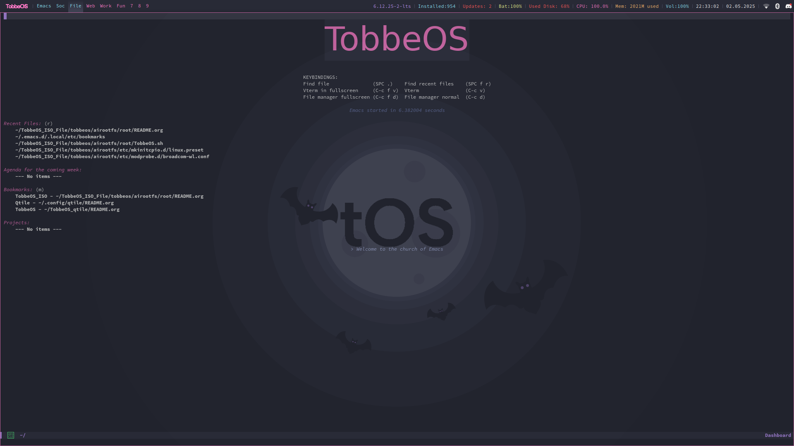

TobbeOS Linux
Welcome to TobbeOS!!
TobbeOS is a GNU/Linux distro based on Arch Linux. We made TobbeOS to welcome new user to Linux and we make sure it both easy to use and a learning tool with a beutiful top bar and a classic filebrowser and a beutiful desktop. The desktop is build on a Window manager called Qtile.

- Important keys to know about:
- Mod = Super key (Windows key)
- Mod + E - Open Emacs - Need to install with script tobbeos/emacs_install.sh
- Mod + Return - Open Terminal (Kitty)
- Mod + s - Show hotkeys
- Mod + left Shift + s - Show alias for fish shell
- Mod + left Shift + Tab - Open web browser (Zen)
- Mod + left Shift + q - kill window
- Mod + d - Rofi (Program Launcher)